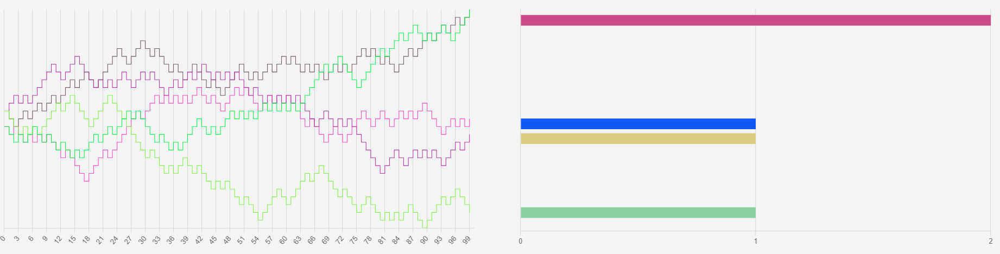

Empirical Distribution of the Attack to N Server by M Hacker with probability p

M Hackers attacking N servers with probability p. Each step can be 0 or 1
How the Median Minimizes the Sum of Absolute Deviations
Continuous Random Walks Simulation and Donsker's Theroem
C-S (Cauchy-Schwarz) inequality, independence and uncorrelation